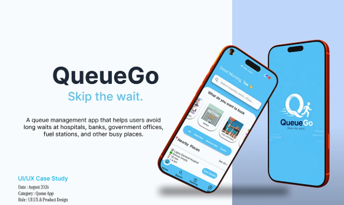

QueueGo — Live Queue Management App
Role: UI/UX Designer | Tools: Figma

The Problem
People waste time waiting in physical lines with no visibility into wait time or their position in the queue — for banks, clinics, government offices, etc
Process
- Mapped the user flow from joining a queue to getting served, identifying key friction points (uncertainty, no way to leave and come back without losing your spot)
- Wireframed core screens: join queue, live position tracker, notifications, admin/staff view
- Designed the high-fidelity UI with a focus on visual hierarchy — the "your position" number is the dominant element on screen, since that's the one thing users check obsessively
- Applied accessibility and responsive design principles so the app works on any device size
Key Decisions
- Used color-coded status (green/yellow/red) instead of numbers alone, since users skim rather than read while waiting.
- Designed a persistent notification banner rather than requiring users to keep the app open.
Outcome
A complete, responsive queue management interface — covering both the end-user and admin experience.
View Full Gallery on Behance